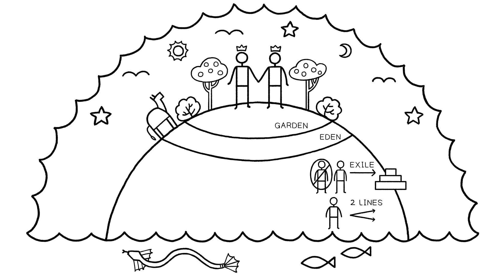
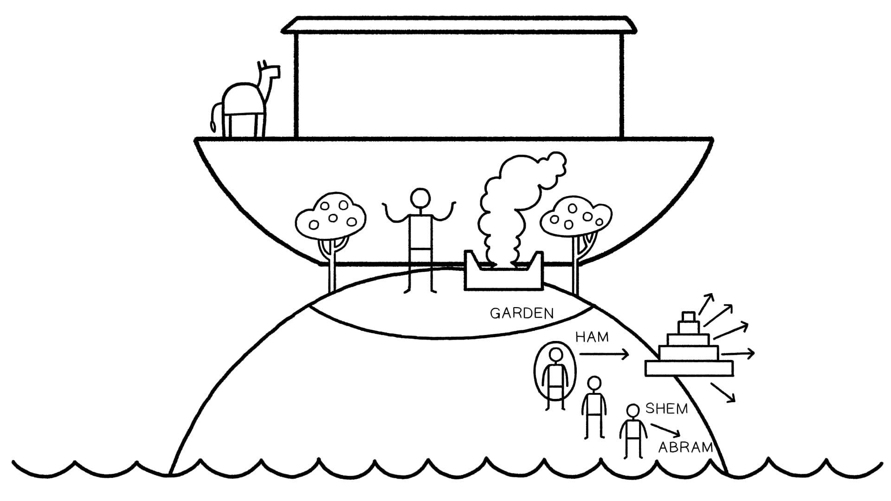

O prólogo de Gênesis 1 (1:1-2) e o epílogo (1:31-2:3) foram desenhados como uma macro-moldura ao redor da sequência interna de seis dias, enfatizando o simbolismo de sete dações de Deus e o clímax de toda a narrativa no sétimo dia. Observe como as palavras-chave do prólogo de abertura ("criou", "céus", "terra"), bem como o design 1x7 e 2x7 de 2:1-2, são retomadas e completadas no epílogo com as mesmas palavras e o design 3x7.The prologue of Genesis 1 (1:1-2) and the epilogue (1:31-2:3) have been designed as a macro frame around the internal sequence of six days, emphasizing the sevenfold symbolism of God's actions and the culmination of the entire narrative in the seventh day. Notice how the key words of the opening prologue ("created," "skies," "land") as well as the 1x7 and 2x7 design of 2:1-2 are taken up and completed in the prologue with the same words and the 3x7 design.
No princípio, Deus criou os céus e a terra [7 palavras]In the beginning, God created the skies and the land [7 words]
Assim foram concluídos os céus e a terra e todo o seu exércitoThus were finished the skies and the land and all their host
porque nele descansou de toda a sua obra que Deus criou para fazer [palavra-chave de 1:1]because on it he rested from all his work which God created to make [key word of 1:1]
A história de Adão e Eva em Gênesis capítulos 2-5 se enquadra em um padrão maior em ação em Gênesis 1-11. Os capítulos 1-5 desenrolam um ciclo de temas, e os capítulos 6-11 reencenam e desenvolvem o ciclo. Esses padrões simétricos são criados pela repetição densa de palavras-chave que indicam os argumentos temáticos em ação na narrativa e mostram comparações importantes.The Adam and Eve story in Genesis chapters 2-5 fits within a larger pattern at work in Genesis 1-11. Chapters 1-5 play out a cycle of themes, and chapters 6-11 replay and develop the cycle. These symmetrical patterns are created by the dense repetition of key words that indicate the thematic arguments at work in the narrative and show important comparisons.
| UnidadeUnit | TemaTheme |
|---|---|
| A1 | 1:1-2:3 Criação do cosmo sagrado a partir das águas do caos / imagem humana de Deus / bênção / frutificar e multiplicar1:1-2:3 Creation of sacred cosmos from chaos waters / human image of God / blessing / fruitful and multiply |
| B1 | 2:4-3:24 Templo-jardim montanha / pecado, nudez, maldição, exílio2:4-3:24 Mountain-garden temple / sin, nakedness, curse, exile |
| B2 | 4:1-16 A próxima geração peca / irmãos se dividem / primogênito não escolhido / maldição, exílio4:1-16 Next generation sins / brothers divide / firstborn not chosen / curse, exile |
| UnidadeUnit | TemaTheme |
|---|---|
| C1 | 4:17-26 Adão a Lameque: 7 gerações + 3 filhos / cidade de Caim / assassinato / 70 x 74:17-26 Adam to Lemek: 7 generations + 3 sons / city of Cain / murder / 70 x 7 |
| C2 | 5:1-32 Adão a Noé: 10 gerações + 3 filhos / promessa de consolo5:1-32 Adam to Noah: 10 generations + 3 sons / promise of comfort |
| B3 | 6:1-8 Rebelião cósmica no Céu e na Terra: filhos de Deus invadem a terra, levando ao dilúvio6:1-8 Cosmic rebellion in Heaven and Earth: sons of God invade the land, leading to the flood |
| A2 | 6:9-9:19 Des-criação pelas águas do caos e recriação / Noé como nova humanidade / bênção / frutificar e multiplicar6:9-9:19 De-creation by chaos waters and recreation / Noah as new humanity / blessing / fruitful and multiply |
| B1 | 9:20-21 Vinha do jardim / pecado, nudez9:20-21 Garden vineyard / sin, nakedness |
| B2 | 9:22-27 A próxima geração peca / irmãos se dividem / primogênito não escolhido / maldição, dispersão9:22-27 Next generation sins / brothers divide / firstborn not chosen / curse, scattering |
| C1 | 10:1-32 Noé + 3 filhos / 7 gerações até Pelegue / Cidade de Babilônia e Assíria / 70 nações10:1-32 Noah + 3 sons / 7 generations to Peleg / City of Babylon and Assyria / 70 nations |
| B3 | 11:1-9 Rebelião cósmica em Babilônia: filhos de Adão invadem os céus, levando à dispersão11:1-9 Cosmic rebellion in Babylon: sons of Adam invade the heavens, leading to the scattering |
| C2 | 11:10-26 Sem a Abrão: 10 gerações / 3 filhos11:10-26 Shem to Abram: 10 generations / 3 sons |
| A3 | 12:1-9 Abrão como nova humanidade / bênção / frutificar e multiplicar12:1-9 Abram as new humanity / blessing / fruitful and multiply |
"[O]s episódios extraídos das tradições hebraicas da história primitiva foram concebidos em duas sequências correspondentes (Gn 1-6 e 6-11) ... Cada uma dessas sequências descreve a maneira pela qual a humanidade foi removida progressivamente do reino de Deus [isto é, o jardim do Éden e o dilúvio], no qual ele iniciou a discórdia fraternal (e portanto humana) [isto é, Caim e Abel, e os filhos de Noé], então dividiu-se em agrupamentos tribais e nacionais [genealogias cainitas e semitas e a Tabela das Nações], então tentou restaurar sua natureza divina ou ganhar acesso ao reino divino, mas foi frustrado nisso por Deus [filhos de Deus e Torre de Babel]. Em cada caso, é a consequência dessa hubris que levou Deus a uma decisão de focar seu relacionamento com a humanidade em uma pessoa. No primeiro caso (Gn 6), Deus destrói a humanidade, permite que sobreviva através de sua escolha de Noé, mas quase imediatamente reconhece (Gn 8:21) que Sua medida foi um pouco drástica. ... [No segundo caso,] aflito pela repetida tentativa do homem de desequilibrar a ordem cosmológica, e não mais se permitindo a opção de aniquilar totalmente a humanidade, Deus finalmente se fixa em um indivíduo, arranca-o de seu próprio parentesco, e promete a ele prosperidade e continuidade em uma nova terra.""[T]he episodes culled from Hebraic traditions of early history were conceived in two matching sequences (Gen. 1-6 and 6-11) ... Each one of these sequences describes the manner in which humanity was removed progressively from the realm of God [i.e. the garden of Eden and flood], in which he initiated fraternal (and hence human) strife [i.e. Cain and Abel, and Noah's sons], then divided into tribal and national groupings [Cainite and Shemite genealogies and the Table of Nations], then attempted to restore his divine nature or gain access to the divine realm, but was foiled in this by God [sons of God and Tower of Babel]. In each case, it is the consequence of this hubris which launched God into a decision to focus his relationship with humanity on one person. In the first case (Gen. 6), God destroys mankind, allows it to survive through his choice of Noah, but almost immediately recognizes (Gen. 8:21) that His measure was a shade too drastic. ... [In the second case,] distressed by man's repeated attempt to unbalance the cosmological order, and no longer allowing himself the option of totally annihilating mankind, God finally settles on one individual, uproots him from his own kin, and promises him prosperity and continuity in a new land."
Sasson, J. M., Hess, R. S., e Tsumura, T. (1994). "A 'Torre de Babel' como uma Pista para a Estruturação Redacional da História Primeva (Gênesis 1:1-11:9)." Eisenbrauns.Sasson, J. M., Hess, R. S., and Tsumura, T. (1994). "The 'Tower of Babel' as a Clue to the Redactional Structuring of the Primeval History (Genesis 1: 1-11:9)." Eisenbrauns.
"Quando entendido como a introdução à Torá e a todo o Tanak, Gênesis 1-3 intencionalmente prefigura a falha de Israel em guardar a aliança de Sinai, bem como seu exílio da terra prometida, a fim de apontar o leitor para uma futura obra de Deus nos 'últimos dias'. A falha de Adão em 'conquistar' (Gn 1:28) o habitante sedicioso da terra (a serpente), sua tentação e violação dos mandamentos, e seu exílio do jardim é a história de Israel em miniatura ... Assim como foi no princípio ... assim será no fim. Na conclusão do Pentateuco, Moisés apresenta a futura apostasia e exílio de Israel como uma certeza (veja Dt 30:1-10) ... Esse inclusio de pessimismo em ambas as extremidades do Pentateuco com respeito à capacidade humana de 'fazer isso e viver', não apenas fornece o contexto para interpretar a narrativa de Sinai, mas também provê a razão para a necessidade de uma nova obra nos 'últimos dias', pela qual Deus curará o coração humano. Além disso, a base também é lançada para a expectativa de outro 'Adão' (um futuro rei-sacerdote) surgir do meio do povo de Israel que cumprirá o mandato da criação nos últimos dias. Em outras palavras, Gênesis 1-3 ... prepara abertamente o leitor a esperar que Israel falhará sua aliança com Deus, e assim aguardar expectante no exílio por uma nova obra de Deus nos últimos dias.""When understood as the introduction to the Torah and to the Tanakh as a whole, Genesis 1-3 intentionally foreshadows Israel's failure to keep the Sinai covenant as well as their exile from the promised land in order to point the reader to a future work of God in the 'last days.' Adam's failure to 'conquer' (Gen. 1:28) the seditious inhabitant of the land (the serpent), his temptation and violation of the commandments, and his exile from the garden is Israel's story in miniature ... Just as it was in the beginning ... so it will be in the end. In the conclusion to the Pentateuch, Moses presents Israel's future apostasy and exile as a certainty (see Deut. 30:1-10) ... This inclusio of pessimism at both ends of the Pentateuch with respect to human abilities to 'do this and live,' not only supplies the context for interpreting the Sinai narrative, but also provides the rationale for the need of a new work in the 'last days,' whereby God will heal the human heart. Moreover, the groundwork is also laid for the expectation of another 'Adam' (a future priest king) to arise from among the people of Israel who will fulfill the creation mandate in the last days. In other words, Genesis 1-3 ... forthrightly prepares the reader to expect that Israel will fail its covenant with God, and so to wait expectantly in exile for a new work of God in the last days."
Postell, Seth (2011). Adão como Israel: Gênesis 1-3 como a Introdução à Torá e ao Tanak. Pickwick Publications.Postell, Seth (2011). Adam as Israel: Genesis 1-3 as the Introduction to the Torah and Tanakh. Pickwick Publications.
Ler Gênesis 1-11 nos ensina habilidades para ler o resto da Bíblia.Reading Genesis 1-11 teaches us skills for reading the rest of the Bible.


Gênesis 1-11 introduz temas bíblicos importantes através de um ciclo que se repete duas vezes. Quais são alguns desses temas repetidos?Genesis 1-11 introduces important biblical themes through a cycle that repeats twice. What are some of these repeated themes?
Macro-Design of Genesis 1-11. Created by Tim Mackie for BibleProject Classroom: Adam to Noah (2020).
Macro-Design of Genesis 1-11. Created by Tim Mackie for BibleProject Classroom: Adam to Noah (2020).